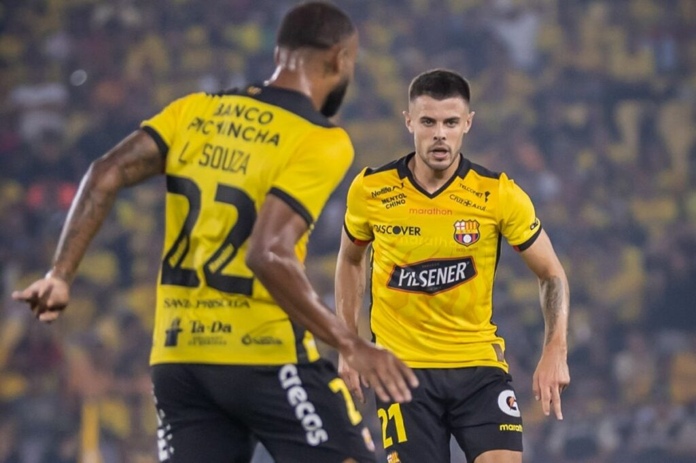
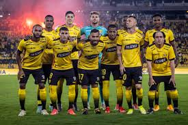
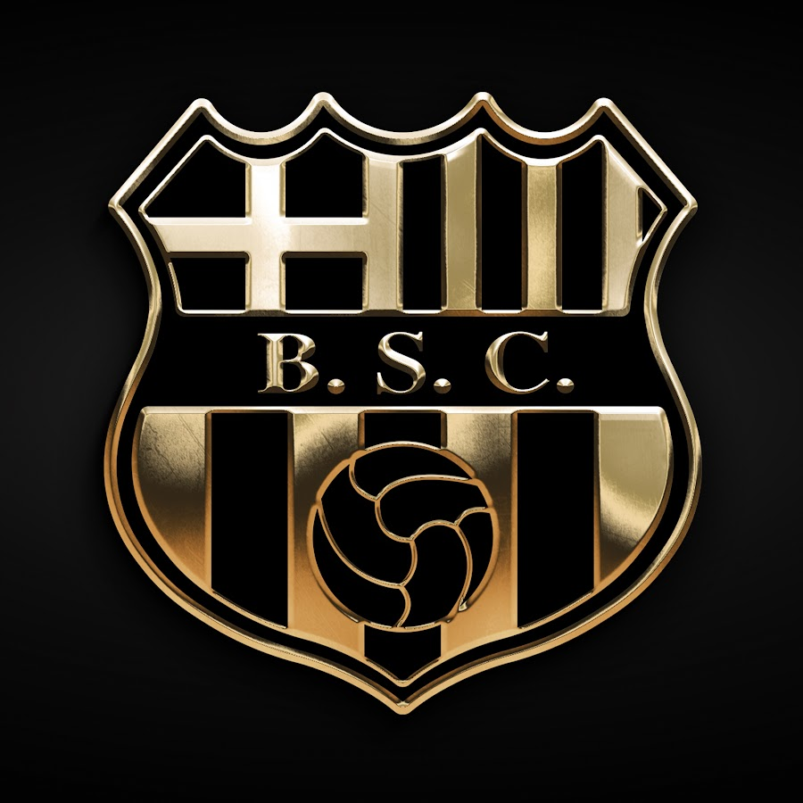

Barcelona SC es uno de los clubes más grandes y populares del Ecuador. Fundado en 1925 en la ciudad de Guayaquil, el equipo ha ganado múltiples campeonatos nacionales y ha sido protagonista en torneos internacionales como la Copa Libertadores. Su estadio, el Monumental Banco Pichincha, es uno de los más imponentes del continente. Con una enorme base de hinchas, el club es un símbolo del fútbol ecuatoriano y protagonista del clásico del Astillero frente a Emelec.


